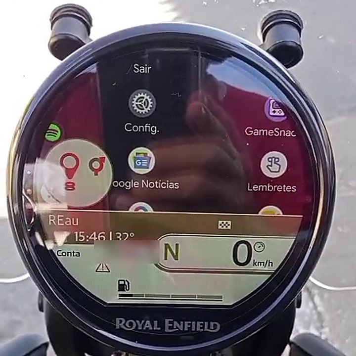

REau
Lleva el Android Auto de tu propio teléfono al tablero TFT redondo (Tripper Dash) de tu Royal Enfield. Sin cable, sin unidad principal y con la pantalla del teléfono apagada.
⚠️ Proyecto personal e independiente, aún en pruebas. Cada motociclista lo instala y lo usa bajo su propio riesgo. Toca el teléfono solo con la moto detenida.

Cómo funciona
REau se presenta ante Android Auto como la unidad principal de un auto, dentro de tu propio teléfono, usando el servidor de unidad principal que Android Auto ofrece en el modo desarrollador. Recibe el video, recorta y escala la imagen para la pantalla del tablero y la envía por el Wi-Fi del tablero. REau no dibuja un mapa ni calcula una ruta: repite en el tablero lo que dibuja la app de navegación.
Qué hace
- Muestra Android Auto en el tablero, con ajuste regulable (apps de navegación y las demás pantallas).
- Envía al tablero la maniobra, la distancia, la hora de llegada y el tiempo que falta de la ruta.
- También envía la canción que suena (con un control de música en el joystick), las llamadas y el clima, para las tarjetas del tablero.
- Usa el joystick del manubrio para controlar Android Auto (mapa, menú, música, llamadas y Gemini).
- Habla portugués, inglés y español, con un selector en Ajustes.
- Ajusta la calidad del video según la distancia a la próxima maniobra y la velocidad.
- Opcional: muestra Android Auto en un navegador de la red local, protegido por un PIN.
Una sola app
REau es una sola app (com.reau.app). Por defecto abre los ajustes de Android Auto y tú enciendes el servidor de unidad principal a mano (se apaga al terminar la sesión, así que lo enciendes de nuevo cada vez). Sabe qué pantalla de Android Auto está abierta por la propia imagen, con una red neuronal pequeña que corre en el teléfono. Detalles en la sección 2 de la FAQ.
¿Vienes de la antigua REau Lite? REau 0.3.0 es una app nueva para ti (la Lite tenía el paquete com.reau.app.lite): rehaz los ajustes y el emparejamiento con el tablero y luego desinstala la Lite antigua. ¿Vienes del REau anterior (com.reau.app)? Solo instala encima: los ajustes y el emparejamiento se quedan. Dos instalaciones juntas compiten por el único servidor de Android Auto.
Requisitos
- Teléfono con Android 10 o más nuevo, con Android Auto instalado y actualizado.
- Modo desarrollador de Android Auto activado, con el servidor de unidad principal (la guía explica cómo).
- Un tablero compatible (Tripper Dash) con su Wi-Fi al alcance; compatibilidad verificada con el firmware 13.10.
Privacidad
Sin cuenta, sin anuncios, sin recolección de datos. Lo que sale del teléfono va al tablero; los únicos viajes a internet son el clima (activado por defecto cuando concedes la ubicación, con un interruptor para apagarlo) y el botón “Buscar actualizaciones”, que consulta a GitHub solo cuando lo tocas. Ver privacidad y términos.
Software libre
REau es software libre bajo la GNU Affero General Public License v3.0. El código fuente, el registro de cambios y los créditos de los proyectos que usa están en el repositorio. Cada APK publicado en la página de Releases viene con su código fuente exacto: los elementos “Source code” de la misma Release (la etiqueta de esa versión).